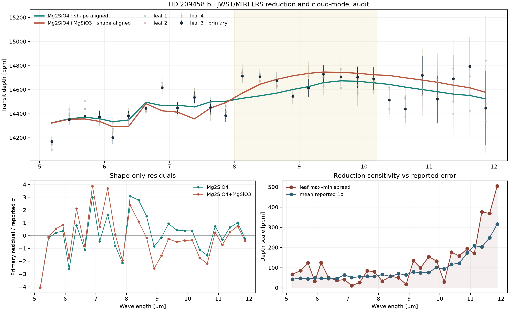

Data source notes
SHA-256, LF-normalised text
c5b24c00508bc3c37a23a6f0c8967c1008fa3539706eb5219c18de250b7ed9b4Browse 10 versioned evidence files. Table previews simply display stored rows. Consult the project report for the source, processing steps, and inference assumptions.

c5b24c00508bc3c37a23a6f0c8967c1008fa3539706eb5219c18de250b7ed9b49d9e9ee244e17f78b95d83dce865cc5de1909e439daed97b072dc416021caa13a2335c9a785ece9bc58fa9e0587b1a71aab3a668e96c93ee06fd0262c650367270be34f6104f5fb8ea2f4acf569641be06c29c4501cd162340732c544325595c| pl_name | pl_orbper | pl_orbsmax | pl_rade | pl_radj | pl_bmasse | pl_bmassj |
|---|---|---|---|---|---|---|
| HD 209458 b | 3.52474859000 | 0.0470700000 | 15.58051000 | 1.39000000 | 232.01590000 | 0.73000000 |
d0c5448e768027509072beafef1ad85ff9f4e0640cc870609bfca7102c28bb2e09e284dd2a5d75bfbef9bf3a68d70387f507eab017c6393a113e980fbe2fd1fc| quantity | value | unit |
|---|---|---|
| n_wavelength_bins | 28 | count |
| wavelength_min | 5.187 | micron |
| wavelength_max | 11.873 | micron |
| primary_weighted_mean_depth | 14457.9 | ppm (leaf 3) |
7cbda8cc0d5e12d42c461a31d42e92970f12dcb4f1b0c380a5fac49092ec8639| leaf | weighted_mean_depth_ppm | photon_only_mean_error_ppm | feature_minus_reference_ppm | photon_only_contrast_error_ppm |
|---|---|---|---|---|
| 1 | 14478.128889852367 | 11.180799318014508 | 267.18638468547357 | 25.338499666349815 |
| 2 | 14449.364686105566 | 12.148889836731675 | 279.06422203854106 | 28.851714723970243 |
| 3 | 14457.869226593277 | 11.545517808329206 | 294.06054242245466 | 27.440701016411484 |
| 4 | 14472.723154126708 | 13.096957686618286 | 294.0730099291293 | 31.20325788583946 |
4b0bc7b6123a1f9ff6757849f600725a80b4c08f3966c21de54366674c8a711f| model | fitted_vertical_offset_ppm | shape_only_chi2 | n_bins |
|---|---|---|---|
| Mg2SiO4 | -370.7379307632781 | 69.89652695076175 | 28 |
| Mg2SiO4+MgSiO3 | -327.14009928681463 | 84.07372412228243 | 28 |
7cf1c70f2f59a08dbe40f91e2275c5b3e435a9b2dd515f61b222d3b9fafe1466a1aef2df3805ec4b1ca031892f9e491d72c6e00661fadd6bdb68835eb789e019SHA-256 values verify the stored files. They do not independently validate the scientific analysis. Rebuild this page with python scripts/evidence_catalog.py followed by python scripts/render_evidence_page.py.